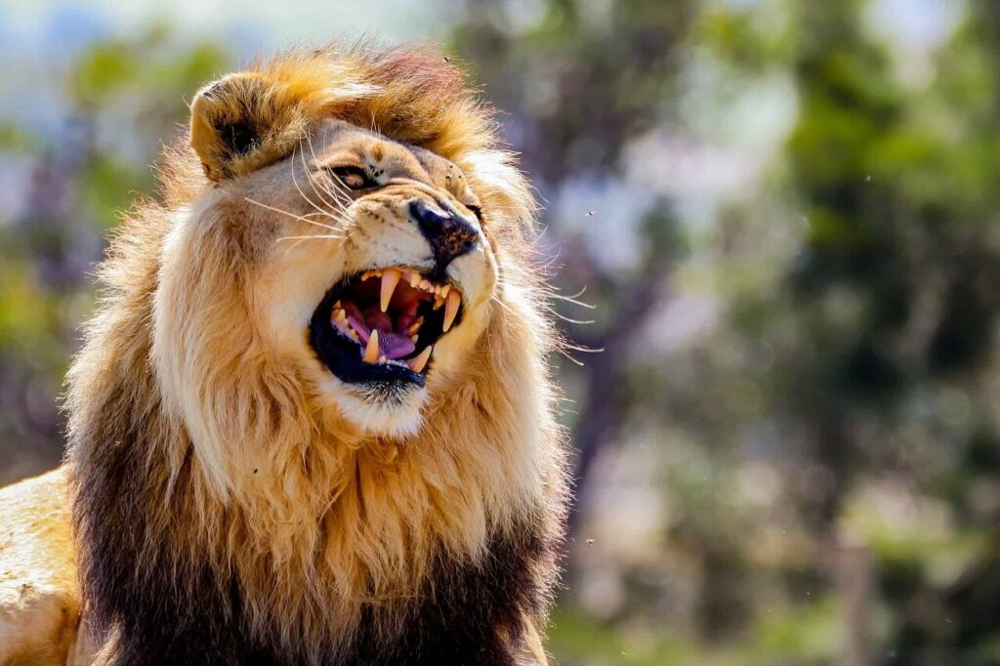
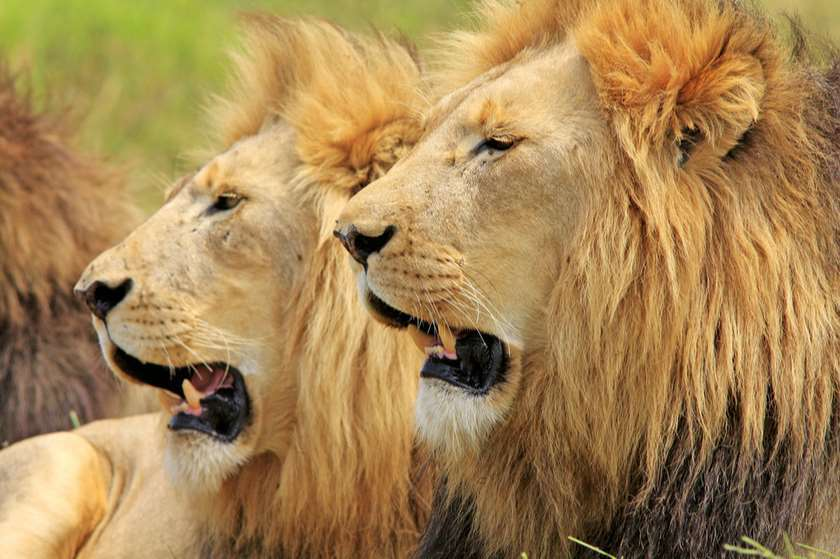

ლომი არის ერთ-ერთი ყველაზე ცნობილი და შთამბეჭდავი მტაცებელი ცხოველი,რომელიც აფრიკის სავანებსა და ინდოეთის გირის ტყეში ბინადრობს.მას ხშირად „ცხოველთა მეფედ“მოიხსენიებენმისი ძალის, მანეს და სოციალური ქცევის გამო.
მტაცებელი ძუძუმწოვარი კატისებრთა ოჯახის, პანტერათა გვარისწარმომადგენელი. მისი სხეულის სიგრძე(ხვადისა) 180-240 სმ, მასა 180-227 კგ აღწევს.ძუ ტანად ხვადზე უფრო პატარაა. ლომს აქვს ძლიერი მოქნილი სხეული, მასიური თავი, გრძელი დინგი, შავი ფუნჯით დაბოლოებული გრძელი კუდი. მოზრდილ ხვადს ფაფარიც აქვს, დანარჩენი ბალანი მოკლეა და მოყვითალო. ბოკვერი ხალებიანია. ცნობილია ლომის 2 ქვესახეობა - აფრიკული და აზიური.
ლომი გავრცელებულია ეკვატორულ აფრიკაში (დაცულია ნაკრძალებში) და ინდოეთში (გუჯარეთის შტატი). VIII-X საუკუნეებში ლომი კავკასიაშიც ბინადრობდა. ცხროვრობს სავანებში, ნახევრად უდაბნოებში, იშვიათად უდაბნოებში. იკვებება ხერხემლიანი ცხოველებით, ჭამს აგრეთვე ლეშს, ნადირობს შებინდებისას და ღამით. ადამიანს იშვიათად ესხმის თავს. ბუნაგს იკეთებს გამოქვაბულში, ნაპრალში, ორმოში.